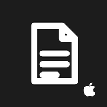

価格無料
対応ブラウザiPhone・PC
カテゴリ仕事効率化
開発つみき自社
プレビューPREVIEW
メモ帳
画面はイメージです（配色はアプリの世界観に合わせた再現）。実際のデータは含みません。
紹介ABOUT
ただ書くだけのメモに、カテゴリとタグを足しました。数が増えても迷子にならず、あとから“探せる”メモ帳。思いつきを軽やかに受け止めて、必要な時に呼び出せます。
つかいかたHOW IT WORKS
- 01
書く
思いついたことを、すぐ入力。
- 02
分ける
カテゴリとタグで仕分け。
- 03
探す
タグから一瞬で呼び出す。
特徴FEATURES
タグで横断検索
テーマをまたいで一気に見つかる。
カテゴリで整理
仕事・私用などで自然に分かれる。
軽快な書き心地
開いてすぐ書ける身軽さ。
情報INFORMATION
開発
つみき ／ 自社プロダクト
カテゴリ
仕事効率化
対応
ブラウザ（iPhone・PC）
技術
ブラウザアプリ（HTML／JavaScript）
価格
無料
状態
稼働中 ／ 個人開発プロダクト
「こういうの、うちにも欲しい」を形にします。
業務の“ちょっと困った”に合わせた専用アプリを、ヒアリングから納品まで。初回相談・お見積りは無料です。
お問い合わせ つみき ポートフォリオへ戻る